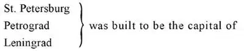

43
The Bear
熊

WHEN -I-WAS -A-BOY the story I liked best was one about wolves in Russia. Some Russians in a sleigh were driving across the snow, when they were attacked by a pack of hungry wolves. The men whipped up their horses, but the wolves drew nearer and nearer. When the wolves were just about to spring upon the sleigh the men threw out food, which the wolves stopped a moment to devour, allowing the sleigh to get ahead. But the wolves caught up and again food was thrown out and again and again, till there was no food left. See if you can guess the end of the story, or make up an ending of your own.
Naturally, I used to think of Russia as a land of wolves, though for some reason people call Russia “The Bear.”
Russia is a huge country—it is the largest country in Europe—it is as large as all the other countries of Europe put together, and in the far north there are wolves, snow, and sleighs. But there is also a middle Russia which is not so cold and a southern Russia which is quite warm.
In the north of Russia it is so cold that even in summer when the snow has gone and the ground has thawed out on top, the ground underneath remains frozen stiff, and, though grass and even flowers grow above, the ground below remains hard and icy. These frozen lands are called “tundras,” and there are thousands of miles of such tundras across the north of Russia.
At the top of Russia is a sea called “White” and at the bottom of Russia a sea called “Black.” The White Sea, I suppose, is called “White” because it is frozen over most of the year and covered with snow—and yet, during a few months of the summer when the ice in it has melted, great ships sail into the White Sea, bringing in loads of all sorts of goods to the one great port on this sea—a city called Archangel—a name that makes one think of heaven.
You may wonder why people live in such faroff places, why they don’t move to other places that are more comfortable. But people live where they can make a living, and cities usually start with a few houses and more and more houses are built until there is a city. But there is a great city farther south than Archangel which was built all at once—to order. It was built by a man named Peter, who was one of the rulers of Russia. They were called “czars.” Peter wanted to live by the water so that he could sail ships, just as you might like to go to the seashore to sail boats, so he built a city by the sea, with streets, shops, houses, and palaces, and then, as he was a czar who could make people do what he wanted, he made people come and live in this city. Peter had been named for St. Peter, so he called his city St. Petersburg, which meant St. Peter’s City. That was two hundred years ago.
When Russia was fighting in World War I the people of St. Petersburg said that they wanted a real Russian name for their city, for “burg” was the German name for city, and they were fighting the Germans, so they called it Petrograd, which was the Russian name for Peter’s City. But the people got tired of the war and all of a sudden they said they would not fight any more; they had a revolution, killed the czar and set up a government of their own. They wanted the city of Petrograd called for the leader of the revolution, a man named Lenin, so they changed the name of the city again to Leningrad, which meant Lenin’s City.

Russia, but it was so cold there they moved the capital to a city still farther south near the center of Russia that had been the capital before. This city is called Moscow.
The revolutionists took the palaces and homes of the wealthy and turned them into hospitals and public buildings. They took the land of the rich and lent it out to farmers and workers. These revolutionists were known as Communists. The provinces and districts of Russia combined as the Union of Soviet Socialist Republics, which is governed from the capital at Moscow.
In Moscow there is a big walled-in place with houses and palaces and churches called the Kremlin. It is from the Kremlin that Russia is ruled, so the Kremlin is really the capitol, though it is not just one building like our Capitol in Washington. The churches in the Kremlin are not used as churches now for after the Revolution the Communists turned them into museums and government buildings just as they did the palaces of the wealthy.
Near the walls of the Kremlin is a great open paved space called Red Square. On one side of Red Square is a flat-topped building which is the tomb of Lenin. The Russians have the largest army i. t. w. W. and they often have parades of soldiers which pass through Red Square past the chief Russian rulers who stand on top of Lenin’s tomb to see the soldiers march by.
The square is called Red Square because red is the color of revolution and the people who govern Russia adopted it as their color. Russia’s flag is red and the Communists themselves are often called Reds. The Communists are not Christians. They don’t believe in any religion.
There are still some Christians in Russia, but the Communists have done many things to make it hard to be a Christian there.
One thing the Communists believe is that all countries must sooner or later be made Communist countries. Communists have seized many of the small countries that are next to Russia. Communists even try to overthrow the governments of countries that do not like Communism and want nothing to do with it. There are a few Communists in England, in France, in the United States—in fact in almost all countries, and these Communists plot and scheme against these countries all the time. A person doesn’t have to be a Russian to be a Communist, but the chief Communists are Russians.
In a Communist country the people must do whatever the Communist rulers tell them. People can be put in prison, or sent to work as slaves in the mines, or even killed by the Communist police without a trial. When they are taken away by the police their families may never hear from them again. Almost no people from other countries are allowed to visit Communist countries, especially the chief Communist country of Russia. “VISITORS NOT WANTED. KEEP OUT” would be a good sign to paste on the map of Russia.
Russia is more than twice as big as any other country i. t. w. W. It’s hard for us to understand why Russia wants to take over more and more countries when it is already so big. But it does. The Russian Communists would like Moscow to be the capital of the whole World, not just the capital of the Union of Soviet Socialist Republics.
The Russian people love music and they love their land of Russia. Some of the best music in the whole World has been written by Russians. Whenever a group of Russians are working together they are apt to sing. Russian soldiers sing on the march, workers in the fields sing together as they work, sailors sing on their ships. Even those poor people who are kept like slaves in prison camps sing, though their songs are not gay but sad.
【中文阅读】
我小时候最喜欢的故事，是关于俄罗斯狼群的。一些俄罗斯人，驾驶着雪橇，穿过雪地，突然遭到一群饿狼的袭击。雪橇上的人用鞭子抽打马，促马快跑，但是狼群还是越逼越近。正当狼群就要扑向雪橇之际，雪橇上的人扔出一些食物，狼群就停下去吞食，这让雪橇可以继续向前跑。但是狼群很快就追上来了，于是又扔出食物，狼群再次赶上来了，再扔，直到食物全部扔完。你猜结果会是怎样呢？或者你自己为这个故事编一个结尾。
听了这样的故事，我一直想当然地认为俄罗斯就是狼的故乡，不过现在由于某种原因俄罗斯被称为“熊”。
俄罗斯国土辽阔——它是欧洲最大的国家——面积相当于欧洲其他所有国家加在一起那么大。在遥远的俄罗斯北部，有狼群，有雪原，还有雪橇。但是， 俄罗斯的中部没有那么冷，南部还相当的温暖。
俄罗斯北部非常寒冷，即使在夏季，雪已经没有了，地面表层也解冻了，但是地下仍然是冻得结结实实；尽管地面长着绿草，甚至还开着鲜花，地下还是又硬又结了冰。这些结冰的土地被称为“冻原”。在俄罗斯北部有数千英里这样的冻原。
在俄罗斯的上方有一片海，叫“白海”，在它的下方，也有一片海，叫“黑海”。我猜测，白海之所以被称为“白海”是因为一年大部分时间它都结着冰，被雪覆盖着；然而，在夏季的几个月里，冰融化了，许多大船也能驶进白海，载着各种各样的货物抵达白海主要的一个大港口——一座叫阿尔汉格尔斯克的城市——这个名字让人想到天堂 [1] 。
你也许很好奇，为什么人们要居住在如此偏远的地方？为什么不搬到环境更舒适一点的地方呢？但是人们一般都住在可以生存的地方，这个地方最初只有几栋房子，房子越建越多就发展成了城市。然而，在阿尔汉格尔斯克南边较远的一座大城市，却是遵照命令一次就建起来的。命令建城的人是一个名叫“彼得”的俄罗斯统治者。俄罗斯的统治者都被称作“沙皇”。彼得想住在海边，这样他能随时驾船航海，就像你很想去海边驾船一样。于是他就在海边建造了一座城市，城里有街道，有商店，有房屋，还有宫殿。此时，因为他是沙皇，他想怎么做，民众就得怎么做。他下令其他地方的人搬到这个城市居住。彼得的名字是根据圣彼得的名字取的，于是他将这座城市命名为“圣彼得堡”，意思是“圣彼得的城市”。这是200年前的事了。
俄罗斯参加第一次世界大战的时候，圣彼得堡的人民说他们想为自己的城市取一个真正的俄罗斯的名字，因为“堡”是德国人用来表示“城市”的，而他们当时又在和德国人打仗，所以他们把“圣彼得堡”改名为“彼得格勒”，彼得格勒在俄语中也是“圣彼得的城市”的意思。后来，人们厌倦了战争，突然就决定不再继续打下去了。他们发动了一场革命，处死了沙皇，建立了自己的政府。他们想用这场革命的领袖——列宁——的名字来称呼“彼得格勒”这座城市，于是，他们又将城市的名字改为“列宁格勒”，意思是“列宁的城市”。这样，圣彼得堡、彼得格勒、列宁格勒都曾是俄罗斯首都的名字，但是这儿气候寒冷，于是人们将首都迁到更南边的一个城市，靠近俄罗斯的中心，那儿以前也曾是首都。这个城市叫莫斯科。
革命者占领了富人的宫殿和房子，将它们建成医院和公共建筑；他们还夺取了富人的土地，租给农民和工人。这些革命者就是众所周知的共产党人。俄罗斯的所有省份和地区联合起来成立了苏维埃社会主义共和国联盟，由首都莫斯科统辖。
在莫斯科，有一处围着围墙的宽阔区域，里面有房子、宫殿和教堂，这个地方叫做克里姆林宫。事实上，俄罗斯的统治中心就是克里姆林宫，所以克里姆林宫才是真正的“国会大厦”，不过它与美国华盛顿的国会大厦只有一座建筑物不同，它有一大片建筑物。克里姆林宫里的教堂不再作为教堂使用，因为革命后共产党人将教堂改建成博物馆和政府大楼，就像他们改建富人的宫殿一样。
在克里姆林宫附近，有一个宽阔的广场叫做“红场”。在红场的一侧有一座平顶建筑，是列宁的陵墓。俄罗斯有世界上最庞大的军队，经常在红场举行阅兵仪式，俄罗斯的主要统治者就站在列宁墓顶的平台上检阅军队。
这个广场被称为红场，因为红色是革命的颜色，而且，俄罗斯的统治者指定红色作为自己的颜色。苏联的国旗是红色的，共产党人也常常被称作是“赤色分子”，他们不是基督徒，也不信仰任何宗教。
俄罗斯人热爱音乐，也热爱自己的国家。全世界有部分最经典的音乐就是俄罗斯人创作的。每当一群俄罗斯人在一起工作，他们就情不自禁唱起来。士兵行军中唱歌，工人工作时唱歌，水手在船上唱歌，甚至那些像奴隶一样被关押在监狱里的不幸的人也唱歌，不过他们的歌声不是欢快的，而是悲伤的。